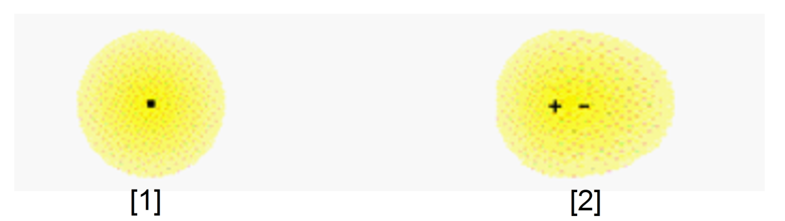
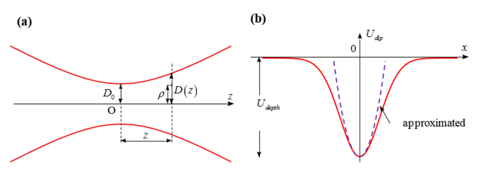
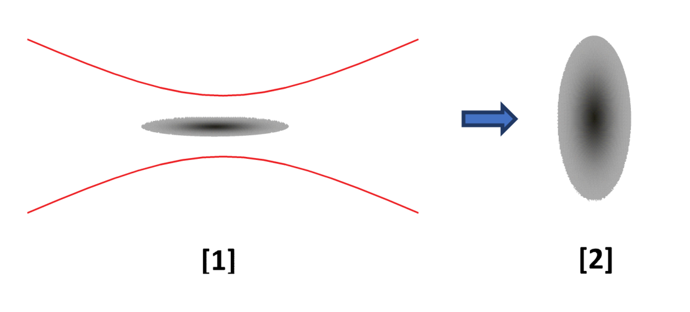

Optical trap of neutral atoms (12 points)
Optical traps are versatile tools to create ultracold atom systems that nowadays play very important role in quantum physics and are believed to have highly nontrivial applications in technology as well as in quantum measurements. By shining a laser beam onto an assembly of neutral atoms, we are able to capture and cool these atoms. When atoms are cooled to near absolute zero temperature, they reveal the whole fascinating quantum behavior, in particular their Bose–Einstein condensation (BEC).
In this problem you will study basic concepts of an optical trap of neutral atoms and one of the signatures to recognize the BEC in experiments on sodium atoms.
A neutral sodium atom can be well described as a core with positive charge surrounded by a homogenous electron cloud with negative charge . The mass of the core is much larger than the mass of the electron cloud. In the absence of an external electric field, the core and the cloud centers coincide. The electric field of a laser beam interacts with the positive core as well as the electron cloud of the atom, so an electric dipole is induced. In turn, this induced dipole will interact with the electric field of the laser beam and thereby gives rise to a dipole potential energy of the atom. The atom is said to feel an optical potential. The latter depends on the intensity profile as well as the frequency of the laser beam in use. By choosing an appropriate laser intensity and frequency, one may form a trap-like potential well to confine the neutral atoms.
We start off by considering the polarization of a neutral atom that is placed in a uniform external electric field , where is a unit vector and is the field magnitude. Then, a dipole moment is induced. Here, is distance between the negative and positive charge centers, and is called polarizability.

Figure 1. Electron cloud distribution. [1] Spherical distribution of electron cloud about the atomic core; [2] Shifted electron cloud (separation of and within the atom) in an electric field.
1 (1.5 points)
Initially the external field is turned off. Then the field magnitude is increased from zero to very slowly so that the electric field can be considered effectively time-independent in this question. The instantaneous value of the external field is denoted by .
1.1 (0.75pt) Find the instantaneous power absorbed by the atom from the external field in terms of and , where is the rate change of the induced dipole moment.
1.2 (0.75pt) Find the total work done by the external field on the atom when the electric field is increased from zero to . Hence deduce an expression for the induced dipole potential energy in terms of and .
Note that when the external electric field is turned off, the electron cloud oscillates with a natural frequency due to its inertia and the Coulomb restoring force.
2 (1.0 point)
In the following we will study the case where the neutral atoms are placed in an external laser field that varies in time and space as . The induced dipole moments will oscillate with the driving laser field frequency . It is well known that an oscillating dipole itself emits electromagnetic radiation. By doing so, electron receives some recoil momentum that causes an electromagnetic friction resulting in a phase shift between the applied electric field and the induced dipole moment. Therefore, the induced dipole moment takes the form . Here, both the polarizability and the phase shift depend on the driving frequency . Due to the oscillating nature, all physical quantities of our interest reveal themselves only via the corresponding time-averaged values over a period of the laser field. The time-averaged value of a periodically varying quantity is defined as
Hereafter, the notation means time-average of the enclosed quantity.
Laser intensity is related to amplitude of the laser electric field as , where is the permittivity of free space and is the speed of light.
2.1 (1.0pt) Find the induced dipole potential energy in term of , , , , and .
3 (1.0 point)
Besides capturing neutral atoms in the trap via the induced dipole potential energy, the oscillating electric field may cause a scattering force on atoms that arises from absorption and emission of light. The light scattering processes lead either to heating or to losses of atoms from the trap and may be characterized by the scattering rate, that is related to the number of photons scattered by an atom in unit time and is defined by . Here, is the time-averaged power absorbed from the laser field, and is the photon energy ().
3.1 (1.0pt) Find the scattering rate in term of , , , , , and .
4 (2.0 points)
Both quantities and depend on the polarizability . In order to calculate the polarizability , we will adopt the one dimensional oscillator model under the presence of an electric field . Let the axis parallel to the unit vector . In this model motion of the electron is determined by three forces:
i) The restoring force that describes the free oscillation with the natural frequency corresponding to the atomic optical transition frequency. We use to denote the displacement of the negative charge center from the positive one, which is assumed to be at rest.
ii) The driving force of the laser field .
iii) The damping force that originates from the radiation of the accelerating charge, and is characterized by the frequency-dependent damping rate .
Therefore, the equation of motion of the electron is given as
The solution to this equation is . Here and are to be determined.
4.1 (2.0pt) Find the polarizability in term of , , , , and .
5 (1.0 point)
In fact the energy damping rate is independent of the electron orbits. Therefore we will adopt another simple model where the electron cloud center performs a circular motion in the absence of the laser field but with the frequency and speed . Being accelerated, the electron radiates an electromagnectic wave with power given by the Larmor formula with denoting acceleration. The damping force is supposed to be related to the damping rate as . We also assume that the total energy of the electron is large compared with the energy loss per cycle.
5.1 (1.0pt) Find the energy damping rate in term of , , , , and .
6 (0.5 point)
When the driving frequency is close to the natural frequency , then the polarizability gets larger, leading to a larger value of the dipole potential as well as an increased scattering rate. Therefore, by considering the ratio , one can find an appropriate laser frequency to reduce the scattering rate while maintaining a reasonably deep trapping potential.
6.1 (0.5pt) Introducing the damping rate at , as , find the ratio in terms of , , and .
7 (1.5 points)
From the above result we can see that it is possible to simultaneously achieve a deep trapping potential and low heating rates by choosing the laser frequency not to be too close to the atomic optical transition , as well as high laser intensity. Because the scattering rate is positive, and from the above obtained ratio , if then the dipole potential is negative and the atoms are captured in a focused region of laser beam with maximum intensity. Once atoms are captured in the trap, by reducing the trapping well depth to remove high energy atoms, one may cool the confined atom gas to ultracold temperatures, enabling formation of BEC. A breakthrough progress in BEC physics had been achieved with sodium atoms Na in the late nineties (D. M. Stamper-Kurn et al., Phys. Rev. Lett. 80, 2027 (1998)).
The physics of BEC can be understood as follows. In nature, there are two kinds of particles: bosons with integer spin and fermions with half integer spin. Two identical fermions cannot exist in the same quantum state. In contrast, multiple bosons are not forbidden to occupy one quantum state: at ultralow temperatures a large fraction of bosons can condensate into the state with lowest possible energy and form a condensate cloud (condensate bosons), while the rest bosons are in the excited state with higher energy (noncondensate or thermal bosons). Let us analyse a practical example of a dilute gas of sodium atoms, which are bosons, confined in the optical trap created by a Gaussian laser beam (Fig 2a). The laser beam has the wavelength corresponding to the frequency (with ). The beam propagates along the -axis with the intensity profile
where and the waist size is with denoting the Rayleigh length. The total laser power and the beam waist parameter determine the parameters of the optical trapping potential, one of which is the potential depth . The latter is defined by the absolute value of the local minimum of the potential energy, taking as a reference the potential energy to be zero at infinity (Fig 2b).

Figure 2. (a) Gaussian beam. The envelope represents the beam waist at the plane . (Adopted from wikipedia); (b) Illustration of optical trap along -axis created by a Gaussian beam with . The dashed line corresponds to a harmonic approximation near the trap bottom.
7.1 (0.5pt) Find the expression for the dipole potential depth in terms of , , , , , and .
7.2 (1.0pt) Given laser power mW, laser wavelength nm, m, and natural wave length for sodium nm, evaluate the potential depth . Express your answer as an equivalent temperature , at which thermal energy of the non-trapped atom is equal to the trap depth.
8 (0.5 point)
When the cloud temperature is much smaller than equivalent temperature , the optical potential can be well approximated by a cylindrically symmetric harmonic potential
where is the mass of a sodium atom and , are oscillation frequencies in the corresponding directions.
8.1 (0.5pt) Find the expression for , in terms of , , , and . Here is the Boltzmann constant.
Recall that at ultralow temperatures, the sodium atom cloud consists of condensate atoms and thermal atoms. Condensate bosons behave according to the uncertainty principle that can be used for estimating the spatial size or the momentum distribution of the cloud. On the other hand, thermal bosons are described by classical physics, in particular, they obey the Maxwell–Boltzmann distribution law.
We estimate the size of the condensate cloud, that is, the mean distance of the condensate sodium atoms from the trap center. Moving inside this cloud, each condensate atom has potential energy as well as kinetic energy. The potential energy is a monotonically increasing function of the cloud size, and the particle tries to reduce it to reach the lowest energy level. On the other hand, as the cloud size decreases, the uncertainty principle requires an increase in the particle momentum, that results in an increase of kinetic energy. The particle therefore finds an optimal cloud size to balance the two opposite tendencies of the two different energy contributions.
9 (1.0 point)
For simplicity, let us consider the simplest case of one dimensional trap potential .
9.1 (0.5pt) Estimate the size of the condensate fraction in terms of , , .
9.2 (0.25pt) Find the expression for — the lowest energy level, in terms of , .
9.3 (0.25pt) Find the average particle velocity in terms of , , .
In what follows we will figure out how to differentiate the condensate cloud from the thermal one by switching off the confining trap. It is neccesary to capture the image of the cloud density profile.
The thermal gas will show an isotropic Maxwell velocity distribution even if the trap is anisotropic. In contrast, the velocity distribution of a BEC is anisotropic. More precisely, the BEC expands faster along the axis of strong confinement than along the axis of weak confinement. The expansion predominantly occurs in the radial direction, and the initially cigar-shaped condensate becomes pancake-shaped. Therefore the density profile after a long time of flight will be anisotropic and inverted with respect to the shape of the cloud in the trap.

Figure 3. Cloud shape. [1] Before switching off the trap; [2] A very long time after switching off the trap.
10 (2.0 points)
Now we extend the previous results to the three-dimensional potential which is the case of the optical trap in a Gaussian laser beam.
10.1 (0.5pt) Find the aspect ratio in terms of , , where and are the initial sizes of the condensate cloud.
10.2 (0.5pt) When the trap is turned off, the condensate will be expanding in different directions with different initial velocities and . Determine the ratio in terms of , .
10.3 (0.5pt) Assuming that the velocities of the cloud expansion remain unchanged during the expansion, find aspect ratio of the condensate cloud after a long period of time when the cloud size is much greater than its initial size, that is and .
10.4 (0.5pt) Same as question 10.3., find the aspect ratio of the thermal cloud after a long period of time when the cloud size is much greater than its initial size, that is and .
Fonte: Testo (PDF) — p.1
Topic: Modern-Quantum Physics, Electromagnetism, Oscillations & Waves Metodi: Simple Harmonic Motion Analysis, Differential Equations, Energy Conservation Method, Photon Energy Relation Competenze: Mathematical Modeling, Estimation & Approximation, Physical Reasoning Objects: Atom, Electron, Photon
Trappola ottica di atomi neutri (12 punti)
Le trappole ottiche sono strumenti versatili per creare sistemi di atomi ultracogli che oggi svolgono un ruolo molto importante nella fisica quantistica e si ritiene che abbiano applicazioni altamente non triviali nella tecnologia e nelle misurazioni quantistiche. Splendendo un raggio laser su un insieme di atomi neutri, siamo in grado di catturare e raffreddare questi atomi. Quando gli atomi vengono raffreddati a temperatura di quasi zero assoluto, rivelano l’intero affascinante comportamento quantistico, in particolare la loro BoseEinstein condensazione (BEC).
In questo problema studierai i concetti di base di una trappola ottica di atomi neutri e una delle firme per riconoscere il BEC negli esperimenti sugli atomi di sodio.
Un atomo di sodio neutro può essere ben descritto come un nucleo con carica positiva circondato da una nube di elettroni omogenei con carica negativa . La massa del nucleo è molto più grande della massa della nube di elettroni. In assenza di un campo elettrico esterno, il nucleo e i centri nuvolosi coincidono. Il campo elettrico di un raggio laser interagisce con il nucleo positivo così come la nube di elettroni dell’atomo, quindi viene indotto un dipolo elettrico. A sua volta, questo dipolo indotto interagisce con il campo elettrico del raggio laser e quindi dà luogo ad un’energia potenziale di dipolo dell’atomo. Si dice che l’atomo senta un potenziale ottico. Quest’ultimo dipende dal profilo di intensità e dalla frequenza del fascio laser in uso. Scegliendo un laser ad adeguata intensità e frequenza, si può formare un pozzo potenziale simile a una trappola per confinare gli atomi neutri.
We start off by considering the polarization of a neutral atom that is placed in a uniform external electric field , where is a unit vector and is the field magnitude. Poi viene indotto un momento diopolare . Qui, è la distanza tra i centri di carica negativa e positiva, e è chiamato polarizzabilità.
Figura 1. Distribuzione di nuvole elettroniche. [1] Distribuzione sferica della nube di elettroni intorno al nucleo atomico; [2] Nube di elettroni spostate (separazione di e all’interno dell’atomo) in un campo elettrico.
1 (1,5 punti)
Inizialmente il campo esterno è disattivato. In seguito, la magnitudine del campo viene aumentata da zero a molto lentamente in modo che il campo elettrico possa essere considerato efficacemente indipendente dal tempo in questa domanda. Il valore istantaneo del campo esterno è indicato da .
1.1 *(0.75pt) * Trova la potenza istantanea assorbita dall’atomo dal campo esterno in termini di e , dove è il cambiamento di velocità del momento diopole indotto.
1.2 *(0.75pt) * Trova il lavoro totale svolto dal campo esterno sull’atomo quando il campo elettrico è aumentato da zero a . Di conseguenza si deduce un’espressione per l’energia potenziale di dipolo indotta in termini di e .
Si noti che quando il campo elettrico esterno è spento, la nube di elettroni oscilla con una frequenza naturale a causa della sua inerzia e della forza di ripristino di Coulomb.
2 (1,0 punti)
In seguito studieremo il caso in cui gli atomi neutri sono collocati in un campo laser esterno che varia in tempo e spazio come . I momenti di dipole indotti oscilleranno con la frequenza del campo laser di guida . È noto che un dipolo oscillante emette radiazioni elettromagnetiche. In tal modo, l’elettrone riceve un certo impulso di retrocesso che provoca un attrito elettromagnetico che provoca un spostamento di fase tra il campo elettrico applicato e il momento di dipolo indotto. Pertanto, il momento di dipole indotto assume la forma . Qui sia la polarizzabilità che il cambiamento di fase dipendono dalla frequenza di guida . A causa della natura oscillante, tutte le quantità fisiche di interesse si rivelano solo attraverso i valori corrispondenti in media temporale per un periodo del campo laser. Il valore medio temporale di una quantità che varia periodicamente è definito come:
In seguito, la notazione indica la media temporale del quantitativo allegato.
L’intensità laser è correlata all’ampiezza del campo elettrico laser come , dove è la permissività dello spazio libero e è la velocità della luce.
2.1 *(1.0pt) * Trova l’energia potenziale di dipole indotta in termini di , , , e .
3 (1,0 punti)
Oltre a catturare atomi neutri nella trappola attraverso l’energia potenziale di dipole indotta, il campo elettrico oscillante può causare una forza di dispersione sugli atomi derivante dall’assorbimento e dall’emissione di luce. I processi di dispersione della luce portano al riscaldamento o alle perdite di atomi dalla trappola e possono essere caratterizzati dalla velocità di dispersione, che è correlata al numero di fotoni dispersi da un atomo in unità di tempo e è definita da . Qui, è la potenza media temporale assorbita dal campo laser, e è l’energia fotonica ().
3.1 *(1.0pt) * Trova il tasso di dispersione in termini di , , , , , e .
4 (2,0 punti)
Entrambe le quantità e dipendono dalla polarizzabilità . Per calcolare la polarizzabilità , si adotterà il modello di oscillatore unidimensionale in presenza di un campo elettrico . Lasciate l’asse parallelo al vettore unitario . In questo modello il movimento dell’elettrone è determinato da tre forze:
i) La forza di ripristino che descrive l’oscillazione libera con la frequenza naturale corrispondente alla frequenza di transizione ottica atomica. Utilizziamo per indicare il spostamento del centro di carica negativa da quello positivo, che si presume sia a riposo.
ii) La forza motrice del campo laser .
iii) La forza di attenuazione che deriva dalla radiazione della carica accelerante e è caratterizzata dal tasso di attenuazione a seconda della frequenza.
Pertanto, l’equazione di movimento dell’elettrone è data come
La soluzione di questa equazione è . Qui devono essere determinate e .
4.1 *(2.0pt) * Trova la polarizzabilità in termini di , , , e .
5 (1,0 punti)
Infatti il tasso di ammortizzazione dell’energia è indipendente dalle orbite degli elettroni. Adotteremo quindi un altro modello semplice in cui il centro nuvola di elettroni esegue un movimento circolare in assenza del campo laser ma con la frequenza e la velocità . Essendo accelerato, l’elettrone irradia un’onda elettromagnetica con potenza data dalla formula di Larmor con che denota l’accelerazione. Si suppone che la forza di ammortizzazione sia correlata al tasso di ammortizzazione come . Supponiamo anche che l’energia totale dell’elettrone sia grande rispetto alla perdita di energia per ciclo.
**5.1 ** *(1.0pt) * Trova il tasso di ammortizzazione energetica in termini di , , , e .
6 (0,5 punti)
Quando la frequenza di guida è vicina alla frequenza naturale , la polarizzabilità diventa più grande, portando ad un valore più elevato del potenziale diopolare e ad un aumento del tasso di dispersione. Pertanto, considerando il rapporto , si può trovare una frequenza laser appropriata per ridurre la velocità di diffusione mantenendo un potenziale di intrappolamento ragionevolmente profondo.
6.1 *(0.5pt) * Introducendo il tasso di ammortizzazione a , come , trovi il rapporto in termini di , e .
7 (1,5 punti)
Dal risultato sopra riportato si può vedere che è possibile ottenere contemporaneamente un potenziale di intrappolamento profondo e bassi tassi di riscaldamento scegliendo la frequenza laser per non essere troppo vicina alla transizione ottica atomica , nonché un’elevata intensità laser. Poiché il tasso di dispersione è positivo, e dal rapporto ottenuto , se il potenziale di dipole è negativo e gli atomi vengono catturati in una regione focalizzata di fascio laser con massima intensità. Una volta che gli atomi sono catturati nella trappola, riducendo la profondità del pozzo di cattura per rimuovere gli atomi ad alta energia, si può raffreddare il gas atomico confinato a temperature ultrafredde, consentendo la formazione di BEC. Un progresso rivoluzionario nella fisica dei BEC era stato raggiunto con gli atomi di sodio Na alla fine degli anni novanta (D. M. Stamper-Kurn et al., Fisica. Il reverendo. Lett. 80, 2027 (1998)).
La fisica del BEC può essere compresa come segue. Nella natura, ci sono due tipi di particelle: bosoni con spin a numeri interi e fermioni con spin a metà intero. Due fermioni identici non possono esistere nello stesso stato quantistico. Al contrario, i bosoni multipli non sono vietati di occupare uno stato quantistico: a temperature ultra basse una grande frazione di bosoni può condensare nello stato con la più bassa energia possibile e formare una nube di condensato (bosoni di condensato), mentre i bosoni del resto sono nello stato eccitato con energia superiore (bosoni non condensati o termici). Analisiamo un esempio pratico di un gas diluito di atomi di sodio, che sono bosoni, confinati nella trappola ottica creata da un raggio laser di Gaussian (Fig. 2a). Il raggio laser ha la lunghezza d’onda corrispondente alla frequenza (con ). Il fascio si propaga lungo l’asse con il profilo di intensità
dove e la cintura è con che indica la lunghezza di Rayleigh. La potenza totale del laser e il parametro della cintura del fascio determinano i parametri del potenziale di intrappolamento ottico, uno dei quali è la profondità potenziale . Quest’ultimo è definito dal valore assoluto del minimo locale dell’energia potenziale, tenendo come riferimento l’energia potenziale a zero all’infinito (Figura 2b).
Figura 2. (a) Fascio di Gaussian. La busta rappresenta la cintura del fascio sul piano . (Adottato da wikipedia); (b) Illustrazione di trappola ottica lungo l’asse creato da un fascio di Gaussian con . La linea tracciata corrisponde ad un approccio armonico vicino al fondo della trappola.
7.1 *(0,5pt) * Trova l’espressione per la profondità di potenziale di dipole in termini di , , , , e .
7.2 * 1,0pt) * Data la potenza laser mW, la lunghezza d’onda laser nm, m e la lunghezza d’onda naturale per il sodio nm, valutare la profondità potenziale . Esprimere la risposta in una temperatura equivalente , alla quale l’energia termica dell’atomo non intrappolato è pari alla profondità della trappola.
8 (0,5 punti)
Quando la temperatura della nuvola è molto inferiore a quella equivalente , il potenziale ottico può essere ben approssimato da un potenziale armonico cilindricamente simmetrico
in cui è la massa di un atomo di sodio e , sono frequenze di oscillazione nelle direzioni corrispondenti.
8.1 *(0.5pt) * Trova l’espressione per , in termini di , , , e . Qui è la costante di Boltzmann.
Ricordate che a temperature ultrabasse, la nube di atomi di sodio è composta da atomi di condensato e atomi termici. I bosoni condensati si comportano secondo il principio di incertezza che può essere utilizzato per stimare la dimensione spaziale o la distribuzione di impulso della nuvola. D’altra parte, i bosoni termici sono descritti dalla fisica classica, in particolare, obbediscono alla legge di distribuzione di MaxwellBoltzmann.
Stimiamo la dimensione della nube di condensato, cioè la distanza media degli atomi di sodio condensato dal centro della trappola. Moviendo dentro questa nuvola, ogni atomo di condensato ha energia potenziale e energia cinetica. L’energia potenziale è una funzione monotonicamente crescente della dimensione della nube, e la particella cerca di ridurla per raggiungere il livello di energia più basso. D’altra parte, man mano che la dimensione della nuvola diminuisce, il principio di incertezza richiede un aumento del momento delle particelle, che si traduce in un aumento dell’energia cinetica. La particella trova quindi una dimensione ottimale della nube per bilanciare le due tendenze opposte dei due diversi contributi energetici.
9 (1,0 punti)
Per semplificazione, consideriamo il caso più semplice del potenziale di trappola unidimensional .
9.1 *(0.5pt) * Estimare la dimensione della frazione di condensa in termini di , , .
9.2 *(0.25pt) * Trova l’espressione per il livello di energia più basso, in termini di , .
9.3 *(0.25pt) * Trova la velocità media delle particelle in termini di , , .
In questo articolo, scopriremo come differenziare la nube di condensato da quella termica spegnendo la trappola di confinamento. È necessario catturare l’immagine del profilo di densità delle nuvole.
Il gas termico mostrerà una distribuzione isotròpica della velocità Maxwell anche se la trappola è anisotròpica. Al contrario, la distribuzione della velocità di un BEC è anisotropa. Più precisamente, il BEC si espanderà più velocemente lungo l’asse di confinamento forte che lungo l’asse di confinamento debole. L’espansione avviene prevalentemente nella direzione radial, e il condensato inizialmente a forma di sigaro diventa a forma di pancake. Pertanto, il profilo di densità dopo un lungo periodo di volo sarà anisotropo e invertito rispetto alla forma della nuvola nella trappola.
Figura 3. Forma di nuvola. [1] Prima di spegnere la trappola; [2] Molto tempo dopo aver spegnato la trappola.
10 (2,0 punti)
Ora estendiamo i risultati precedenti al potenziale tridimensionale, come è il caso della trappola ottica in un raggio laser di Gaussian.
10.1 *(0.5pt) * Trova il rapporto di aspetto in termini di , , dove e sono le dimensioni iniziali del nubo di condensa.
10.2 *(0.5pt) * Quando la trappola è spenta, il condensato si espanderà in diverse direzioni con diverse velocità iniziali e . Determinare il rapporto in termini di , .
10.3 *(0.5pt) * Supponendo che le velocità di espansione della nuvola rimangano invariate durante l’espansione, trovare il rapporto di aspetto della nuvola di condensa dopo un lungo periodo di tempo quando la dimensione della nuvola è molto maggiore della sua dimensione iniziale, cioè e .
10.4 *(0.5pt) * Come nella domanda 10.3, trovare il rapporto di aspetto della nuvola termica dopo un lungo periodo di tempo quando la dimensione della nuvola è molto maggiore della sua dimensione iniziale, cioè e .
Fonte: Testo (PDF) — p.1
Topic: Modern-Quantum Physics, Electromagnetism, Oscillations & Waves Metodi: Simple Harmonic Motion Analysis, Differential Equations, Energy Conservation Method, Photon Energy Relation Competenze: Mathematical Modeling, Estimation & Approximation, Physical Reasoning Objects: Atom, Electron, Photon
Space elevator (8.0 points)
Useful mathematics formula:
Presently, the use of rockets is the only viable method of transporting material from Earth to Moon, Mars, and beyond. However, this method of space travel is not so efficient. A space elevator, if it could be built, would provide a completely new technology for space travel (Fig. 1). This is a long structure that is anchored at the equator and reaches a higher altitude than geostationary orbit (GEO). Geostationary orbit is a circular orbit positioned approximately 42300 km from the Earth’s center and having a period of the same duration and direction as the rotation of the Earth. An object in this orbit will appear stationary relative to the rotating Earth. The modern ideas of the space elevator were first proposed by Artsutanov (Artsutanov, Y. et al., Science, 158, 946, 1967). However, only modest attention was paid to the subject until Pearson published an inspiring paper “The Orbital Tower: a Spacecraft Launcher Using the Earth’s Rotational Energy” (Pearson J., Acta Astronautica. Vol. 2, p. 785, 1975). In Pearson’s paper, many useful features of the space elevator were pointed out and it was made clear that for the space elevator to ever become a reality, the use of a material that is much stronger but much lighter than steel would be necessary. Due to the lack of such a material, there was little continuation of this research for many years, until the 1990s when carbon nanotubes, a new material composed of hexagonal arrays of carbon atoms, were discovered. In 2003, the Port project (http://www.port.com/) was launched to build and operate a space elevator with current technology.

Figure 1. Space Elevator (adapted from wikipedia). (1) Earth; (2) North pole; (3) Anchored at equator; (4) Climber; (5) Counterweight; (6) Rotates with Earth; (7) Cable; (8) Geostationary orbit altitude.
In this part we will study two designs of a space elevator, mechanical properties of carbon nanotubes, and explore some applications of space elevator. You are given the mass of Earth kg, radius of the Earth km, geostationary orbit radius km, solar mass kg, orbital radius of the Earth around the Sun km AU (AU — the astronomical unit), the orbital speed of the Earth 30.9 km/s, and the speed of rotation of the Earth around its axis rad/s.
1. The cylindrical space elevator with a uniform cross section (1.5 points)
Let us first consider a space elevator, which is a cylindrical wire with a uniform cross section and is homogeneous with density . It is a cylinder positioned vertically at the equator. Its height is greater than the height of the geostationary satellite orbit, so that the stress (force per unit area) on the bottom of the cylinder is zero. The cylinder is in tension along its entire length, with the stress adjusting itself so that each element of the cylinder is in equilibrium under the action of the gravitational, centrifugal, and tension forces.
1.1 (0.5pt) Calculate the height of the upper end of the cylinder above the Earth’s surface.
1.2 (0.5pt) Find the distance from the Earth’s center to the point where the stress in the cylinder is maximum.
1.3 (0.5pt) Find the expression for maximum stress of the cylinder in terms of , , and the gravitational acceleration . If the cylinder is made of steel whose density is 7900 kg/m³, tensile strength is 5.0 GPa, evaluate the ratio between the maximum stress and the tensile strength of steel. Tensile strength is the maximum stress a material can withstand.
2. Carbon nanotubes (2.5 points)
Calculation in the previous part shows that in order to build the space elevator, it is neccessary to have light materials with very high tensile strength. Carbon nanotubes are materials that meet such requirements because of strong chemical bondings between very light atoms. Two natural polymorphs of carbon are diamond and graphite. In diamond every carbon atom is surrounded by four nearest neighbor (NN) atoms to form a tetrahedron. Graphite has a layer structure. In each layer, carbon atoms are arranged in a hexagonal plane lattice with three NNs. Although diamond is known as the hardest materials, covalent bondings between carbon atoms in hexagonal layers of graphite is stronger than those between carbon atoms in diamond tetrahedra. Graphite is much softer than diamond because of the van der Waals bonding between carbon atoms of different layers, which is much weaker than covalent bonding.

Figure 2. Graphite structure

Figure 3. Graphene (a) and carbon nanotube (b).
A monatomic layer in graphite is called graphene and has monoatomic thickness. Isolated graphene sheet is not stable and has a tendency to roll up to form carbon spheres or carbon nanotubes. The hexagonal crystal lattice of graphene is depicted in Fig. 4. The distance between two NN carbon atoms is nm and the distance between two closest parallel bondings is nm. Because the covalent bondings between carbon atoms in graphene are very strong, mechanical properties of carbon nanotubes are very special. They have an extremely large Young’s modulus and tensile strength, as well as a very light density. Young’s modulus is defined as the ratio of the stress along an axis to the strain (ratio of deformation over initial length) along that axis in the range of stress in which Hooke’s law holds.

Figure 4. Graphene.

Figure 5. An illustration of a carbon nanotube with 9 carbon–carbon parallel bondings. Note: In this problem, there are 27 carbon–carbon parallel bondings. (1) parallel bond; (2) slanted bond; (3) tube axis.
Now we examine some mechanical properties of a carbon nanotube having 27 carbon–carbon bondings parallel to the tube axis (for an illustration, see Figure 5). The bonding between two carbon atoms can be described by the Morse potential . Here nm is the equilibrium distance between two NN carbon atoms, eV is the bonding energy, and is the displacement of the atom from the equilibrium position. Hereafter, we approximate the Morse potential by a quadratic potential . All non-nearest-neighbor interactions are neglected. In this approximation, one can propose that carbon atoms are bonded through “springs” with the spring constant . Changes in angles between bonds are neglected.
2.1 (0.25pt) Find coefficients and in term of and .
2.2 (0.25pt) Calculate the value of the spring constant .
2.3 (0.5pt) Calculate the value of the Young’s modulus of the carbon nanotube.
In order to estimate the tensile strength, we assume that when the “spring” connecting carbon atoms has the maximum extension the harmonic potential energy equals to the bonding energy.
2.4 (0.5pt) Calculate the value of the maximum extension of the spring.
2.5 (0.5pt) Estimate the tensile strength of the carbon nanotube.
2.6 (0.5pt) Given that the molar mass of carbon is 12 g, estimate the density of the carbon nanotube.
3. The tapered space elevator with a uniform stress (2.5 points)
In the previous section, the density and the tensile strength of carbon nanotubes have been evaluated theoretically. These evaluated values indeed depend on the specific structure of carbon nanotubes. Nevertheless, the idea of space elevator construction is truly feasible. Now we will study a new space elevator design of the so-called tapered tower whose cross section varies with height in such a way that both the stress and mass density are uniform over the entire tower length. The tower has axial symmetry and is positioned vertically at the equator; its height is greater than the height of the geostationary satellite orbit. Denote the cross sectional area of the tapered tower on the Earth surface by and at geostationary height .
3.1 (0.5pt) Find the cross section as a function of distance up the tower from the ground.
3.2 (0.5pt) The tower is designed symmetrically so that the cross sections at the two ends are equal, find the distance from the center of the Earth to the upper end of the tower.
3.3 (0.5pt) The taper ratio is defined as . Find the taper ratio of the tower made of carbon nanotubes with tensile strength 130 GPa and density 1300 kg/m³.
3.4 (1.0pt) We can considerably shorten the length of the elevator by terminating it at the upper end by a counterweight of the appropriate mass. Let be the height of the tower relative to the geostationary height, and find the relation of mass of the counterweight and .
4. Applications: launching payload into orbit and spacecraft to the other planets (1.5 points)
The main application of space elevator is the use of the tower’s rotational energy to launch payload into orbit or send spacecraft to the other planets. It is very easy to get payload into space: we simply have to make it ride up the elevator to an altitude and release it from rest. For simplicity in the calculations, let us assume that the motion of the tower occurs in the plane of Earth’s orbit.
4.1 (0.5pt) Find the critical height up the tower, measured from Earth’s center, at which the object would have to be released from rest to escape Earth’s gravity.
Building a tower of greater height than is necessary if we wish to use it to launch spacecraft on voyages to other planets. Given that the tower height is 107000 km from Earth’s center.
4.2 (1.0pt) Find the minimal and the maximal distances from the Sun that a spacecraft released from rest from the top of the tower can reach. Give your answers in astronomical units. We neglect the Earth’s gravitational attraction at this height.
Fonte: Testo (PDF) — p.1
Topic: Gravitation, Elasticity & Materials Metodi: Newton’s Law of Gravitation, Conservation of Energy, Hooke’s Law, Stress-Strain Analysis Competenze: Mathematical Modeling, Physical Reasoning Objects: Wire, Satellite, Spring
Ascensione spaziale (8,0 punti)
Formula matematica utile:
Attualmente, l’uso di razzi è l’unico metodo praticabile per trasportare materiale dalla Terra alla Luna, a Marte e oltre. Tuttavia, questo metodo di viaggio nello spazio non è così efficiente. Un ascensore spaziale, se possibile, fornire una tecnologia completamente nuova per i viaggi spaziali (Fig. 1). Si tratta di una struttura lunga ancorata all’equatore e che raggiunge un’altitudine superiore all’orbita geostazionaria (GEO). L’orbita geostazionaria è un’orbita circolare posizionata a circa 42300 km dal centro della Terra e che ha un periodo della stessa durata e direzione della rotazione della Terra. Un oggetto in questa orbita apparirà stazionario rispetto alla Terra in rotazione. Le idee moderne dell’ascensore spaziale furono proposte per la prima volta da Artsutanov (Artsutanov, Y. Il testo è stato pubblicato nel corso della sua pubblicazione. Tuttavia, solo una modesta attenzione fu rivolta al tema fino a quando Pearson non pubblicò un ispirante articolo “La Torre Orbitale: un lanciatore di astronavi che utilizza l’energia rotazionale della Terra” (Pearson J., Acta Astronautica). Vol. 2, p. 785, 1975). Nel suo articolo, Pearson ha sottolineato molte caratteristiche utili dell’ascensore spaziale e ha chiarito che per far sì che questo diventi una realtà, sarebbe necessario utilizzare un materiale molto più forte ma molto più leggero dell’acciaio. A causa della mancanza di tale materiale, per molti anni non fu possibile proseguire questa ricerca, fino ai 1990 quando furono scoperti i nanotubes di carbonio, un nuovo materiale composto da array esagonali di atomi di carbonio. Nel 2003, il progetto Porto (http://www.port.com/) è stato lanciato per costruire e gestire un ascensore spaziale con la tecnologia attuale.
Figura 1. Ascensione spaziale (adattato da Wikipedia). (1) Terra; (2) Polo Nord; (3) Ancorato all’equatore; (4) Alpinista; (5) Contro-peso; (6) Rotato con la Terra; (7) Cable; (8) Altitudine in orbita geostazionaria.
In questa parte studieremo due progetti di ascensore spaziale, le proprietà meccaniche dei nanotubi di carbonio e esploreremo alcune applicazioni dell’ascensore spaziale. Vi viene data la massa della Terra kg, il raggio della Terra km, il raggio dell’orbita geostazionaria km, la massa solare kg, il raggio orbitale della Terra attorno al Sole km AU (AU l’unità astronomica), la velocità orbitale della Terra 30,9 km/s e la velocità di rotazione della Terra attorno al suo asse rad/s.
1. L’ascensore cilindrico con sezione trasversale uniforme (1,5 punti)
Consideriamo prima un ascensore spaziale, che è un filo cilindrico con un’intersezione uniforme ed è omogeneo con densità . Si tratta di un cilindro posizionato verticalmente all’equatore. La sua altezza è superiore all’altezza dell’orbita satellitare geostazionaria, in modo che la tensione (forza per unità di area) sul fondo del cilindro sia zero. Il cilindro è in tensione lungo tutta la sua lunghezza, con la tensione che si regola in modo che ogni elemento del cilindro sia in equilibrio sotto l’azione delle forze gravitazionali, centrifughe e di tensione.
1.1 *(0.5pt) * Calcolare l’altezza dell’estremità superiore del cilindro sopra la superficie terrestre.
1.2 (0.5pt) Trova la distanza dal centro della Terra al punto in cui la tensione nel cilindro è massima.
1.3 *(0.5pt) * Trova l’espressione per la tensione massima del cilindro in termini di , , e l’accelerazione gravitazionale . Se il cilindro è in acciaio con una densità di 7900 kg/m3, la resistenza alla trazione è di 5,0 GPa, valutare il rapporto tra la tensione massima e la resistenza alla trazione dell’acciaio. La resistenza alla tensione è la tensione massima che un materiale può sopportare.
2. Nanotubi di carbonio (2,5 punti)
Il calcolo della parte precedente mostra che per costruire l’ascensore spaziale è necessario disporre di materiali leggeri con una resistenza alla trazione molto elevata. I nanotubi di carbonio sono materiali che soddisfano tali requisiti a causa dei forti legami chimici tra atomi molto leggeri. Due polimorfi naturali del carbonio sono il diamante e il grafite. Nel diamante ogni atomo di carbonio è circondato da quattro atomi vicini (NN) per formare un tetraedro. Il grafite ha una struttura di strati. In ogni strato, gli atomi di carbonio sono disposti in una rete a piano esagonale con tre NN. Sebbene il diamante sia noto come il materiale più duro, i legami covalenti tra gli atomi di carbonio nei strati esagonali di grafite sono più forti di quelli tra gli atomi di carbonio nei tetraedri di diamante. La grafite è molto più morbida del diamante a causa del legame di van der Waals tra atomi di carbonio di diversi strati, che è molto più debole del legame covalente.
Figura 2. Struttura grafite
Figura 3. Grafene (a) e nanotubi di carbonio (b).
Uno strato monatomo in grafite è chiamato graphene e ha spessore monoatomo. La foglia di grafene isolata non è stabile e ha la tendenza a rotolare per formare sfere di carbonio o nanotubi di carbonio. La rete cristallina esagonale del grafene è raffigurata nella figura. 4. La distanza tra due atomi di carbonio NN è nm e la distanza tra due legami paralleli più vicini è nm. Poiché i legami covalenti tra gli atomi di carbonio nel graphene sono molto forti, le proprietà meccaniche dei nanotubi di carbonio sono molto speciali. Hanno un modulo di Young estremamente grande e resistenza alla trazione, oltre a una densità molto leggera. Il modulo di Young è definito come il rapporto tra la tensione lungo un asse e la tensione (ratio di deformazione sulla lunghezza iniziale) lungo quell’asse nell’intervallo di tensione in cui si trova la legge di Hooke.
**Figura 4. ** Graphene.
Figura 5. Un’illustrazione di un nanotubo di carbonio con 9 legami paralleli di carbonio. Nota: in questo problema, ci sono 27 legami paralleli di carbonio. (1) legame parallelo; (2) legame inclinato; (3) asse del tubo.
Ora esaminiamo alcune proprietà meccaniche di un nanotubo di carbonio che ha 27 legami di carbonio-carbonio paralleli all’asse del tubo (per un’illustrazione, vedi Figura 5). Il legame tra due atomi di carbonio può essere descritto con il potenziale di Morse . Qui nm è la distanza di equilibrio tra due atomi di carbonio NN, eV è l’energia di legame e è il spostamento dell’atomo dalla posizione di equilibrio. Successivamente, approssimiamo il potenziale di Morse con un potenziale quadratico . Tutte le interazioni tra il vicino non più vicino sono trascurate. In questa approssimazione si può proporre che gli atomi di carbonio siano legati attraverso “prince” con la costante di primavera . I cambiamenti di angolo tra le obbligazioni vengono trascurati.
2.1 *(0.25pt) * Trova i coefficienti e in termini di e .
2.2 *(0,25pt) * Calcolare il valore della costante di molla .
**2.3 ** *(0.5pt) * Calcolare il valore del modulo del nanotubo di carbonio Young.
Per stimare la resistenza alla trazione, supponiamo che quando l’atomo di carbonio che collega la “primavera” ha l’estensione massima l’energia potenziale armonica sia uguale all’energia di legame.
**2.4 ** *(0.5pt) * Calcolare il valore della estensione massima della molla.
2.5 *(0,5pt) * Estimare la resistenza alla trazione del nanotubo di carbonio.
2.6 *(0.5pt) * Dato che la massa molare del carbonio è di 12 g, calcolare la densità del nanotubo di carbonio.
3. L’ascensore spaziale con tensione uniforme (2.5 punti)
Nella sezione precedente, la densità e la resistenza alla trazione dei nanotubi di carbonio sono state valutate teoricamente. Questi valori valutati dipendono effettivamente dalla struttura specifica dei nanotubi di carbonio. Tuttavia, l’idea di costruire ascensori spaziali è davvero fattibile. Ora studieremo un nuovo design di ascensore spaziale della cosiddetta torre a taglio la cui sezione trasversale varia con l’altezza in modo tale che sia la tensione che la densità di massa siano uniformi su tutta la lunghezza della torre. La torre ha una simmetria assiale e è posizionata verticalmente all’equatore; la sua altezza è maggiore dell’altezza dell’orbita satellitare geostazionaria. Indicare la superficie trasversale della torre a rottura sulla superficie terrestre per e ad altezza geostazionaria .
3.1 *(0.5pt) * Trova la sezione trasversale in funzione della distanza verso l’alto della torre dal terreno.
3.2 *(0.5pt) * La torre è progettata simmetricamente in modo che le sezioni incrociate alle due estremità siano uguali, trovare la distanza dal centro della Terra alla fine superiore della torre.
3.3 *(0,5pt) * Il rapporto di abbassamento è definito come . Trova il rapporto di abbassamento della torre in nanotubi di carbonio con resistenza alla trazione di 130 GPa e densità di 1300 kg/m3.
3.4 *(1.0pt) * Possiamo ridurre notevolmente la lunghezza dell’ascensore terminandolo all’estremità superiore con un contrappeso della massa appropriata. Si deve essere l’altezza della torre rispetto all’altezza geostazionaria e trovare il rapporto di massa del contrappeso e .
4. Applicazioni: lancio di carico utile in orbita e navi spaziali verso gli altri pianeti (1,5 punti)
L’applicazione principale dell’ascensore spaziale è l’uso dell’energia di rotazione della torre per lanciare il carico utile in orbita o inviare la sonda spaziale agli altri pianeti. È molto facile portare il carico utile nello spazio: basta farlo salire dall’ascensore ad un’altitudine e rilasciarlo dal riposo. Per semplificare i calcoli, supponiamo che il movimento della torre si verifichi nel piano dell’orbita terrestre.
4.1 *(0.5pt) * Trova l’altezza critica su la torre, misurata dal centro della Terra, alla quale l’oggetto dovrebbe essere rilasciato dal riposo per sfuggire alla gravità terrestre.
La costruzione di una torre di altezza superiore a è necessaria se vogliamo usarla per lanciare navi spaziali in viaggi verso altri pianeti. Dato che l’altezza della torre è di 107000 km dal centro della Terra.
**4.2 ** *(1.0pt) * Trova le distanze minime e massime dal Sole che una sonda spaziale rilasciata dal riposo dalla cima della torre può raggiungere. Date le vostre risposte in unità astronomiche. Negli aspetti della gravità della Terra a questa altezza.
Fonte: Testo (PDF) — p.1
Topic: Gravitation, Elasticity & Materials Metodi: Newton’s Law of Gravitation, Conservation of Energy, Hooke’s Law, Stress-Strain Analysis Competenze: Mathematical Modeling, Physical Reasoning Objects: Wire, Satellite, Spring
Thermoelectric effects and their applications in thermoelectric generator and refrigerator (10 pt)
Introduction: Thermoelectric effects
Thermoelectric effects in conducting materials are due to the interplay between heat current and electrical current. In this problem we consider only three predominant thermoelectric effects, namely the Joule, the Seebeck and the Peltier effects, neglecting the others.
The Joule effect is a consequence of the interaction between electrical carriers and crystal lattice. Moving directionally in presence of electrical current, carriers transfer a part of their energy to the vibrating crystal lattice, and as a result the crystal is heated. The Joule effect is irreversible.
The Seebeck effect can be observed in a thermocouple consisting of two dissimilar conducting bars A and B connecting by direct junction (Fig. 1a) or junction via an intermediate material C (Fig. 1b). The material C is good electrical conductor with very small specific heat. When the two junctions of the thermocouple are maintained at different temperatures and (Fig. 1a,b) the Seebeck electromotive force (emf) is produced
\epsilon = \alpha(T_1 - T_2) \tag{1}
where is the Seebeck coefficient of the thermocouple. is considered temperature independent. The Seebeck effect is applied in thermoelectric generator to convert heat energy into electrical one.

Figure 1. (a) direct junctions. (b) junctions via an intermediate material C. (1) Heat source (temperature ); (2) Heat sink (temperature ).
The Peltier effect
Whenever current passes through a thermocouple circuit consisted of two dissimilar conductors A and B with direct junctions (Fig. 2a) or junctioned via intermediate conductor C (Fig. 2b), depending on the current direction, heat is either absorbed or released at the junctions of the two conductors. This is the Peltier effect. The Peltier heat power appeared at a junction is
q = \pi I \tag{2}
is the Peltier coefficient of this junction. The Seebeck and Peltier effects are reversible effects in contrast to the irreversible Joule effect. Although the Seebeck and Peltier effects need junctions between the thermoelements, they are essentially bulk effects. A closed electrical cycle in a thermocouple with the Peltier effect (Fig. 2b) can be used as a refrigerator when heat is removed from one isolated junction and rejected at the other.
For simplicity, the heat radiation, circulation, conduction through surrounding environment are considered negligible, and heat current is supposed to be inside the thermocouple and at the heat source and the heat sink.

Figure 2. (a) Direct junctions; (b) junctions via an intermediate material C.
Data for thermal and electrical properties of materials and the thermocouple studied in this problem are given in the Table 1 and 2 for numerical calculation.
| Name | Material | Resistivity (m) | Thermal conductivity (WmK) |
|---|---|---|---|
| A | BiTeSe | 1.4 | |
| B | BiSbTe | 1.4 |
Table 1: Parameters of materials used in thermocouple (at room temperature)
| Thermocouple AB | Length (m) | Seebeck’s coefficient (VK) |
|---|---|---|
| 0.02 | 420 |
Table 2: Parameters of the thermocouple.
A. Heat transfer and thermoelectric generator
A1. Heat transfer in a homogeneous conducting bar
An electric current (Figure 3) flows along a homogeneous conducting bar with length , resistivity , thermal conductivity . The two ends of the bar are located at coordinates and in the OX axis. The temperature at is , at is (), both temperatures are kept constant.

Figure 3
The heat current (the amount of heat transferred via perpendicular cross-section per unit time) flowing in the bar is described by the Fourier law
q(x) = -kS\frac{dT(x)}{dx} \tag{3}
here is thermal conductivity, and is the cross-sectional area of the bar.
A1.1 (0.75pt) Find the temperature distribution when varies along the bar at the steady state assuming no heat loss to the surroundings. Hint: the equation has the solution , where and are derived from boundary conditions.
A1.2 (1.0pt) Find the heat current at point and , at the two ends, respectively.
A2. Relation between Peltier and Seebeck Coefficients
Relation between Peltier and Seebeck coefficients for all temperature range is generally proved in thermodynamics. Here, this relation is derived for the particular case when the thermocouple is made of conducting materials A and B (Fig. 1b) with the Seebeck coefficient and small-enough resistivity so that the Joule effect can be neglected. The Peltier coefficients at the hot (temperature ) and cold (temperature ) junctions are and correspondingly. During electrical process, the electron gas in the thermocouple performs a ideal thermodynamic cycle.
A2.1 (0.25pt) Find the expression for the heat current received by the electron gas from the heat source with temperature .
A2.2 (0.25pt) Find the expression for the heat current transferred by the electron gas to the heat sink with temperature .
A2.3 (0.5pt) Find the net electrical power produced by the electron gas if the Seebeck coefficient is .
A2.4 (0.5pt) Express the Peltier coefficient at a junction in term of the Seebeck coefficient and the temperature of the junction.
A3. Thermoelectric generator

Figure 4. Thermoelectric generator. (1) Heat source (temperature ); (2) Heat sink (temperature ).
Hereafter the Peltier coefficient is taken to be equal to for all temperatures and the Joule heat must be included in consideration.
The thermocouple consisting of two conducting bar A and B with equal length is used as thermoelectric generator (Fig. 4). The parameters of the bars A and B are: cross-sectional areas , ; resistivities , ; thermal conductivities , . The lower ends of the A and B bars are connected to a load of resistance . Parameters of the thermocouple are: the Seebeck coefficient, the internal resistance, the thermal conductance. The upper hot end (lower cold end) of the thermocouple is maintained at temperature () and . Denote as the heat power taken from the heat source with temperature , as the heat power transferred to the heat sink with temperature by the thermocouple.
A3.1 (0.5pt) Find the expressions for , in terms of the thermocouple parameters , , , the temperatures , and the current .
The efficiency of the thermoelectric generator is defined as , where the electrical power of the load. The ratio between the load and internal resistances of the thermocouple is denoted as .
A3.2 (0.75pt) Find the expression for the efficiency in terms of the thermocouple parameters , , , the temperatures , and the resistance ratio .
In order to determine the efficiency of thermoelectric generators, the following properties of the thermocouple are needed: low electrical resistance to minimize Joule heating, low thermal conductivity to retain heat at the junctions, and a maintained large temperature gradient. These three properties are put together in one quantity , which is called the figure-of-merit of the thermocouple.
A3.3 (0.25pt) Find the expression for the efficiency in terms of , the ideal Carnot cycle efficiency , and .
A4. The maximum efficiency
The efficiency of the thermocouple equals when the electric power of the load takes the maximum value, .
A4.1 (0.25pt) Find the expression for the in terms of the figure of merit , , and .
The efficiency is maximum when the resistance ratio takes some value which is denoted by .
A4.2 (0.75pt) Find the expression for in terms of , , and .
A4.3 (0.25pt) Express the maximum efficiency via , , and .
A5. The maximum figure of merit
Increasing the figure of merit of the thermocouple leads to the increase of the efficiency of the thermoelectric generator. In practice, the cross-sectional areas , of the bars of the thermocouple are choosen so that the figure of merit of the thermocouple has maximum value .
A5.1 (0.5pt) Derive the expression for the ratio between the cross-sectional areas of the bars in terms of , , , when the figure of merit of the thermocouple is maximum.
A5.2 (0.25pt) Express the maximum figure of merit in term of , , , , .
A6. The optimum efficiency
The optimum efficiency of the thermolectric generator is defined as the efficiency when the electric power at the load and the figure of merit both are at the maximum values. The hot heat source and cold heat sink are maintained at temperatures K, K respectively.
A6.1 (0.5pt) Find the numerical value of the thermoelectric generator made from materials with parameters given in Table 1 and compare it with the ideal efficiency .
A6.2 (0.25pt) Find the numerical value of the maximum efficiency of the thermoelectric generator made from given materials.
B. Thermoelectric refrigerator
The thermocouple with parameters , , given in the question A3 is used as a thermoelectric refrigerator and described in the Fig. 5.
B1. The cooling power and the maximum temperature difference
The upper end of the thermocouple is a heat source with the initial temperature . It is thermally isolated with ambient environment, and needs to be cooled. The lower ends of the thermocouple, A and B bars are connected to a battery and are at the temperature of the heat sink. The sense of the electrical current is chosen so that the Peltier heat is absorbed at the upper junction and released to the heat sink at the lower junction.

Figure 5. Thermoelectric refrigerator. (1) Isolated heat source (temperature ); (2) Heat sink (temperature ).
B1.1 (0.25pt) Find the expression for the cooling power (heat current flows from the heat source to the bars of the thermocouples) in terms of the thermocouple parameters , , and , , .
B1.2 (0.5pt) Find the expression for the maximum temperature difference in term of the figure of merit of the thermocouple and the lowest temperature of the isolated heat source .
B2. The working current
The thermocouple made from materials A and B with best value of figure of merit found in part A is used for the refrigerator.
B2.1 (0.25pt) Calculate the numerical value of the minimum temperature of the isolated heat source if the temperature of the heat sink is K.
B2.2 (0.5pt) Calculate the working current intensity of the thermoelectric refrigerator when the temperature of the heat source is at the minimum value and the temperature of the heat sink K. For simplicity the cross-sectional areas of the bars are taken to be equal, m.
B3. The coefficient of performance
When the temperature difference is less than its maximum value , the coefficient of performance is usually used for assessing of the performance of the thermoelectric refrigerator. , where is the supplied electrical power.
B3.1 (0.5pt) Find the expression for the coefficient of performance in terms of the parameters , , of the thermocouple and , , .
When the coefficient of performance has its maximum value , the current intensity is .
B3.2 (0.25pt) Find the expression for in terms of the parameters , , of the thermocouple and temperatures , .
B3.3 (0.25pt) Find the expression for the maximum coefficient of performance .
Fonte: Testo (PDF) — p.1
Topic: Thermodynamics, Circuits Metodi: First Law of Thermodynamics, Thermodynamic Cycle Analysis, Differential Equations, Kirchhoff’s Laws Competenze: Mathematical Modeling, Physical Reasoning Objects: Battery, Resistor
Effetti termoelettrici e loro applicazioni nel generatore e frigorifero termoelettrici (10 pt)
Introduzione: Effetti termoelettrici
Gli effetti termoelettrici nei materiali conduttori sono dovuti all’interazione tra corrente termico e corrente elettrica. In questo problema consideriamo solo tre effetti termoelettrici predominanti, vale a dire gli effetti Joule, Seebeck e Peltier, ignorando gli altri.
L’effetto Joule **** è una conseguenza dell’interazione tra i portanti elettrici e la rete cristallina. Se si muove in direzione in presenza di corrente elettrica, i portatori trasferiscono una parte della loro energia alla rete di cristallo vibrante, e di conseguenza il cristallo viene riscaldato. L’ effetto Joule è irreversibile.
The Seebeck effect can be observed in a thermocouple consisting of two dissimilar conducting bars A and B connecting by direct junction (Fig. 1a) o un’incombinazione attraverso un materiale intermedio C (Fig. 1b). Il materiale C è un buon conduttore elettrico con un calore specifico molto piccolo. Quando le due unioni del termoparte sono mantenute a temperature diverse e (Fig. 1a, b) si produce la forza elettromotrice Seebeck (emf)
\epsilon = \alpha(T_1 - T_2) \tag{1}
dove è il coefficiente Seebeck del termopare. è considerato indipendente dalla temperatura. L’effetto Seebeck viene applicato nel generatore termoelettrico per convertire l’energia termica in energia elettrica.
Figura 1. (a) giunzioni dirette. b) le unioni attraverso un materiale intermedio C. (1) Fonte di calore (temperatura ); (2) Sciacquatore di calore (temperatura ).
L’effetto Peltier
Ogni volta che il corrente passa attraverso un circuito termopare consisteva in due conduttori diversi A e B con giunzioni dirette (Fig. 2a) o collegati attraverso un conduttore intermedio C (Fig. 2b), a seconda della direzione corrente, il calore viene assorbito o rilasciato nelle unioni dei due conduttori. Questo è l’effetto Peltier. La potenza termico di Peltier apparsa in una giunzione è
q = \pi I \tag{2}
è il coefficiente di Peltier di questa giunzione. Gli effetti Seebeck e Peltier sono effetti reversibili, in contrasto con l’effetto Joule irreversibile. Sebbene gli effetti Seebeck e Peltier richiedano un collegamento tra gli elementi termoelementi, sono essenzialmente effetti a granellamento. Un ciclo elettrico chiuso in un termopare con effetto Peltier (Fig. 2b) può essere utilizzato come frigorifero quando il calore viene rimosso da una giunzione isolata e respinto dall’altra.
Per semplicità, la radiazione di calore, la circolazione, la conduzione attraverso l’ambiente circostante sono considerate trascurabili, e la corrente di calore dovrebbe essere all’interno del termopare e alla fonte di calore e al dissipatore di calore.
Figura 2. (a) Giunzioni dirette; (b) Giunzioni attraverso un materiale intermedio C.
Per il calcolo numerico, i dati sulle proprietà termiche ed elettriche dei materiali e della termoparta studiata in questo problema sono riportati nelle tabelle 1 e 2.
| Name | Material | Resistivity (m) | Thermal conductivity (WmK) |
|---|---|---|---|
| A | BiTeSe | 1.4 | |
| B | BiSbTe | 1.4 |
**Tabella 1: ** Parametri dei materiali utilizzati nella termoparta (a temperatura ambiente)
| Thermocouple AB | Length (m) | Seebeck’s coefficient (VK) |
|---|---|---|
| 0.02 | 420 |
**Tabella 2: ** Parametri della termopoppia.
A. Trasferimento di calore e generatore termoelettrico
A1. Trasferimento di calore in una barra di conduttore omogenea
Un corrente elettrica (Figura 3) scorre lungo una barra di conduttore omogenea con lunghezza , resistività , conducibilità termica . Le due estremità della barra sono situate alle coordinate e nell’asse OX. La temperatura a è , a è (), entrambe le temperature sono mantenute costanti.
Figura 3
La corrente termico (la quantità di calore trasferita per sezione perpendicolare per unità di tempo) che scorre nella barra è descritta dalla legge di Fourier
q(x) = -kS\frac{dT(x)}{dx} \tag{3}
Qui è la conducibilità termica e è l’area trasversale della barra.
A1.1 *(0,75pt) * Trova la distribuzione della temperatura quando varia lungo la barra allo stato di stabilità, purché non si perda calore per l’ambiente circostante. Suggerimento: l’equazione ha la soluzione , dove e sono derivate dalle condizioni di confine.
A1.2 *(1.0pt) * Trova la corrente termico rispettivamente nei punti e , alle due estremità.
A2. Relazione tra i coefficienti Peltier e Seebeck
La relazione tra i coefficienti Peltier e Seebeck per tutte le temperature è generalmente dimostrata nella termodinamica. Qui, questa relazione è derivata per il caso particolare in cui la termoparta è costituita da materiali conduttori A e B (Fig. 1b) con il coefficiente Seebeck e una resistività sufficientemente piccola da poter trascurare l’effetto Joule. I coefficienti di Peltier alle giunzioni calde (temperatura ) e fredde (temperatura ) sono rispettivamente e . Durante il processo elettrico, il gas elettronico nel termopare esegue un ciclo termodinamico ideale.
A2.1 *(0.25pt) * Trova l’espressione della corrente di calore ricevuta dal gas elettronico dalla fonte di calore con temperatura .
A2.2 *(0.25pt) * Trova l’espressione della corrente termica trasferita dal gas elettronico al dissipatore termico a temperatura .
A2.3 *(0,5pt) * Trova la potenza elettrica netta prodotta dal gas elettronico se il coefficiente Seebeck è .
A2.4 *(0,5pt) * Esprimere il coefficiente Peltier in una giunzione in termini del coefficiente Seebeck e della temperatura della giunzione.
A3. Generatore termoelettrico
Figura 4. Generatore termoelettrico. (1) Fonte di calore (temperatura ); (2) Sciacquatore di calore (temperatura ).
In seguito il coefficiente Peltier è considerato uguale a per tutte le temperature e deve essere preso in considerazione il calore di Joule.
Il termocoppello costituito da due barre di conduttori A e B di uguale lunghezza è utilizzato come generatore termoelettrico (Fig. 4). I parametri delle barre A e B sono: aree di sezione trasversale , ; resistenze , ; conductività termica , . Le estremità inferiori delle barre A e B sono collegate ad un carico di resistenza . I parametri della termoparta sono: il coefficiente di Seebeck, la resistenza interna, la conduttività termica. La parte superiore della termoparta calda (la parte inferiore del termoparta freddo) è mantenuta a temperature () e . Indicare come potenza termica presa dalla fonte di calore a temperatura , come potenza termica trasferita al serbatoio a temperatura dalla termocoppia.
A3.1 *(0,5pt) * Trova le espressioni di , in termini di parametri di termopare , , , temperature , e corrente .
L’efficienza del generatore termoelettrico è definita come , dove è la potenza elettrica del carico. Il rapporto tra il carico e le resistenze interne della termoparta è indicato come .
A3.2 *(0.75pt) * Trova l’espressione per l’efficienza in termini di parametri del termoparte , , , le temperature , e il rapporto di resistenza .
Per determinare l’efficienza dei generatori termoelettrici, sono necessarie le seguenti proprietà del termopare: bassa resistenza elettrica per ridurre al minimo il riscaldamento di Joule, bassa conducibilità termica per trattenere il calore alle giunzioni e mantenere un grande gradiente di temperatura. Queste tre proprietà sono riunite in una quantità , che viene chiamata la figura di merito della termopara.
A3.3 *(0.25pt) * Trova l’espressione per l’efficienza in termini di , l’efficienza ideale del ciclo Carnot , e .
A4. L’efficienza massima
L’efficienza della termopoppia è pari a quando la potenza elettrica del carico raggiunge il valore massimo, .
A4.1 *(0.25pt) * Trova l’espressione per il in termini di figura di merito , e .
L’efficienza è massima quando il rapporto di resistenza assume un certo valore indicato da .
A4.2 *(0.75pt) * Trova l’espressione per in termini di , e .
A4.3 *(0.25pt) * Esprimere l’efficienza massima tramite , , e .
A5. Il valore massimo del merito
L’aumento della cifra di merito del termopare conduce ad un aumento dell’efficienza del generatore termoelettrico. In pratica, le aree di sezione trasversale , delle barre del termoparte sono scelte in modo che la figura di merito del termoparte abbia un valore massimo .
A5.1 *(0,5pt) * Derivare l’espressione per il rapporto tra le superfici di sezione trasversale delle barre in termini di , , , quando la figura di merito della termopara è massima.
A5.2 *(0.25pt) * Esprimere la cifra massima di merito in termini di , , , , .
A6. L’efficienza ottimale
L’efficienza ottimale del generatore termoelettrico è definita come l’efficienza quando la potenza elettrica al carico e la figura di merito sono entrambi al massimo. La fonte di calore caldo e il lavandino di calore freddo sono mantenuti rispettivamente a temperature K e K.
A6.1 *(0,5pt) * Trova il valore numerico del generatore termoelettrico realizzato con materiali con i parametri indicati nella tabella 1 e confrontale con l’efficienza ideale .
A6.2 *(0.25pt) * Trova il valore numerico dell’efficienza massima del generatore termoelettrico realizzato con determinati materiali.
B. Frigorifero termoelettrico
Il termopare con i parametri , , indicati nella domanda A3 è utilizzato come frigorifero termoelettrico e descritto nella figura. 5.
B1. Potenza di raffreddamento e differenza massima di temperatura
L’estremità superiore della termoparta è una fonte di calore con temperatura iniziale . È termicamente isolato dall’ambiente circostante e deve essere raffreddato. Le estremità inferiori della termocoppia, le barre A e B sono collegate a una batteria e sono a temperatura del disipadore termico. Il senso della corrente elettrica è scelto in modo che il calore di Peltier sia assorbito nella giunzione superiore e rilasciato al dissipatore di calore nella giunzione inferiore.
Figura 5. frigorifero termoelettrico. (1) Fonte di calore isolata (temperatura ); (2) Sciacquatore di calore (temperatura ).
B1.1 *(0,25pt) * Trova l’espressione per la potenza di raffreddamento (correnti di corrente di calore dalla fonte di calore alle barre dei termopari) in termini di parametri del termopari , , e , , .
B1.2 *(0,5pt) * Trova l’espressione per la differenza massima di temperatura in termini della figura di merito della termoparta e della temperatura più bassa della fonte di calore isolata .
B2. La corrente di lavoro
Per il frigorifero si utilizza la termoparta realizzata con materiali A e B con il miglior valore di valore della parte A.
B2.1 *(0,25pt) * Calcolare il valore numerico della temperatura minima della fonte di calore isolata se la temperatura del disipadore di calore è K.
B2.2 *(0,5pt) * Calcolare l’intensità di corrente di lavoro del frigorifero termoelettrico quando la temperatura della fonte di calore è al valore minimo e la temperatura del disipadore di calore K. Per semplificazione, le aree di sezione trasversale delle barre sono prese come uguali, m.
B3. Il coefficiente di prestazioni
Quando la differenza di temperatura è inferiore al suo valore massimo , il coefficiente di prestazioni viene solitamente utilizzato per valutare le prestazioni del frigorifero termoelettrico. , dove è la potenza elettrica fornita.
B3.1 *(0,5pt) * Trova l’espressione per il coefficiente di prestazione in termini di parametri , , della termopoppia e , , .
Quando il coefficiente di prestazione ha il suo valore massimo , l’intensità di corrente è .
B3.2 *(0.25pt) * Trova l’espressione per in termini di parametri , , della termoparta e temperature , .
B3.3 *(0.25pt) * Trova l’espressione per il coefficiente massimo di prestazione .
Fonte: Testo (PDF) — p.1
Topic: Thermodynamics, Circuits Metodi: First Law of Thermodynamics, Thermodynamic Cycle Analysis, Differential Equations, Kirchhoff’s Laws Competenze: Mathematical Modeling, Physical Reasoning Objects: Battery, Resistor